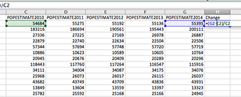
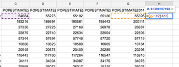

Chapter 7 Percent change
Calculating percent change is where newsrooms divide the Math Capable from Everyone Else. In some newsrooms, if you can calculate percent change, you are seen as some kind of magician, a conjurer of dark arts not to be understood by mere mortals.
It’s pathetic.
Calculating percent change is easy if you can remember this simple formula: New minus old divided by old or, more mathematically (New-Old)/Old
That’s it. Take your new number, from this year say, subtract last years figure from it, and then divide by last years figure. If it’s a positive number, the number grew year over year. If it’s negative, it shrunk year over year. And what comes out will be a small number that you’ll need to multiply by 100 to get the percentage.
7.1 How to calculate a percent change
Let’s take a fictional professor in your university. This professor this year makes $66,000 a year. Last year, the professor made $65,000 a year. What is the percentage change in the professor’s salary?
Remember the formula?
(New-Old)/Old or (66000-65000)/65000 is .0153846 or 1.5 percent (take that small number and multiply by 100 to get the percentage).
7.2 How to calculate a percent change in a spreadsheet
Percent changes are extremely common in spreadsheets and data journalism. And this is where they shine. For both Google and Excel, the formula is the same.
Let’s try a new dataset. This one is called population.csv – download it here – and it is the estimated population of every county in the US. This is a dataset released every year by the U.S. Census Bureau, and it’s the best guess they have on how many people live in a county between the every 10 year census that counts everyone. It’s also a great way to see if your county is growing or not, and how fast in relation to others in the state or country.
Open the file in your spreadsheet software – File/Open in Excel, File/Import in Google – and take a look. It’s pretty simple. The first thing we’re going to do is create a new header at the end of the filled columns. Click on the first empty box in row one and type Change.
Now, in the box below, and remembering that all spreadsheet formulas start with an equal sign, we’re going to enter our percent change formula. An example would be:
=(J2-E2)/E2
| In Excel | In Google Spreadsheets |
|---|---|
|  |  |
NOTE: The screenshots are from a previous iteration and have not been updated yet. The formula above is correct, but uses older cell references. The screenshots here are for visual reference.
When you hit enter, you’ll have the percent change in population for Autauga County, Alabama.
Great. But where’s that? Do I have to type this formula another 3,400 times to get them all?
Nope.
Click back on the cell that has the percent change you just calculated in it. See the small black square on the bottom right corner of you box? Double click that.
And just like that, you’ve calculated the percent change in population in every county in the United States.
7.3 How to turn a percent change into a story
Percent changes by themselves are rarely interesting, but what happens if we add a sort to this? Remember, we can sort two ways. What stories pop out when you sort for the fastest shrinking counties first? What happens when you sort for fastest growing? Do national stories emerge? Do local stories emerge? What are they?